Qalta App
AI Expense Tracker
When your bank app sends a payment notification, Qalta can save it as an expense. The amount and merchant are parsed from the notification text.
You need iOS 27, Qalta and Shortcuts, and a bank app that posts lock-screen notifications. This trigger is not available on iOS 26.
Open Shortcuts and tap the + button at the bottom to create a new shortcut.
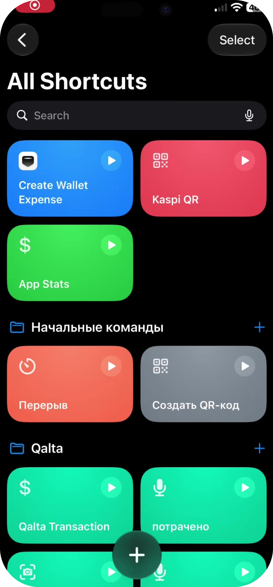
An empty editor opens. In the action search, tap the Automation chip — or type “Automation”.
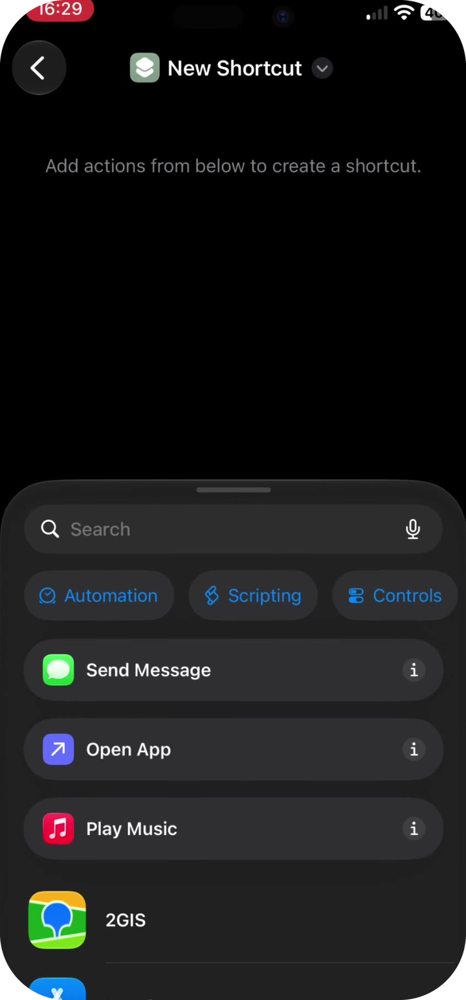
Under Apps, tap Notification — “When I receive a notification from …”.
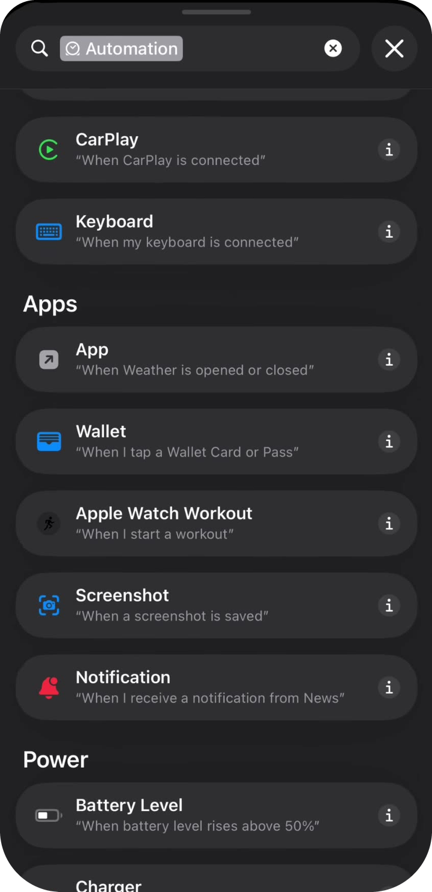
The first block says When I receive a notification from App. Tap the blue App chip to choose your bank.
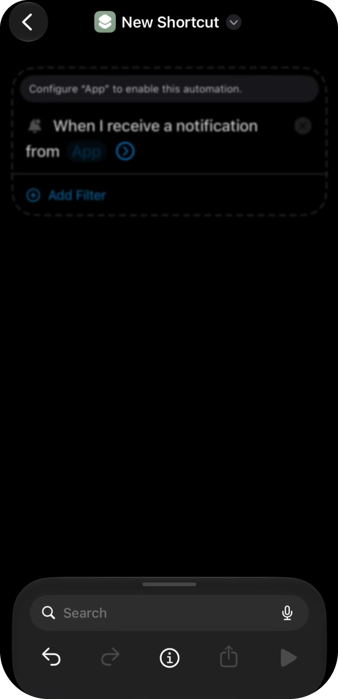
Search for your bank and tap the app that sends payment alerts (for example Kaspi.kz, not a related Pay or QR app).
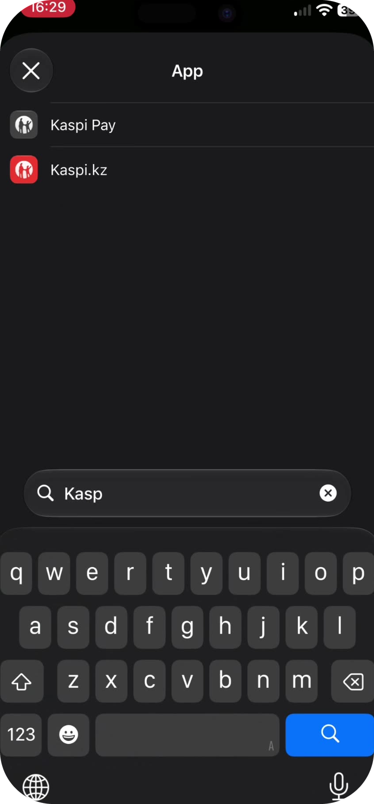
You should now see When I receive a notification from [bank]. In the search field at the bottom, type Qalta.
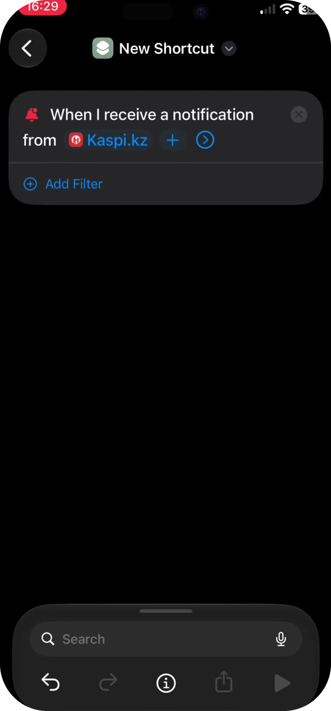
Tap Log Bank Expense (not “Create Wallet Expense” and not “Create Transaction”).
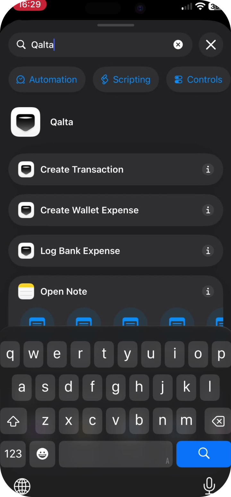
You should see two blocks: the notification trigger and Log bank expense from Notification body. Tap the gray Notification body field.
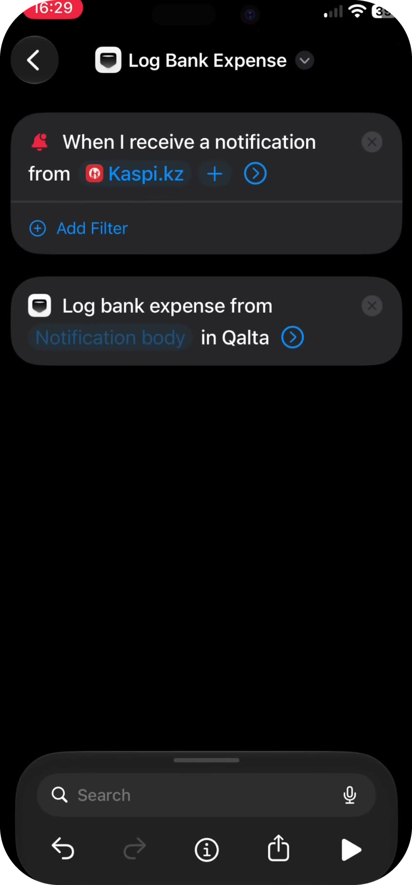
A keyboard appears. Above it, tap Select Variable, then tap the blue Notification chip under the trigger.
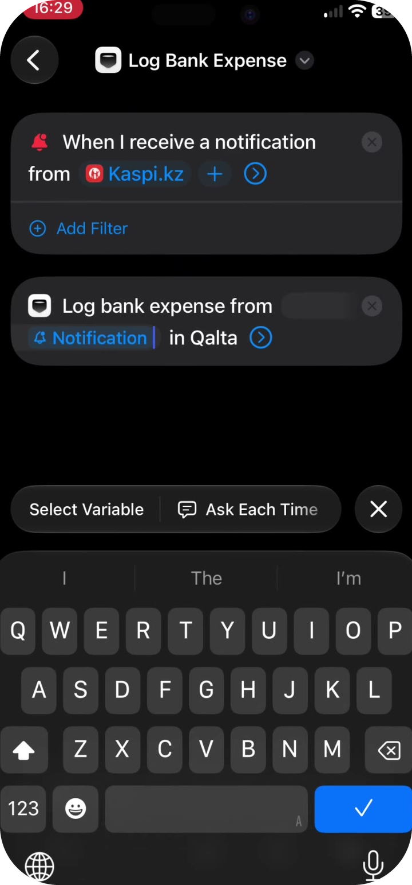
Tap the blue Notification chip that now sits inside the Qalta action. In the sheet, do not leave the checkmark on “Notification” — tap Body. Qalta reads the amount from the notification text, not from the whole notification object.
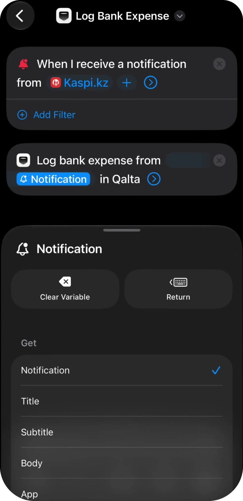
The Qalta action should now say Log bank expense from Body.
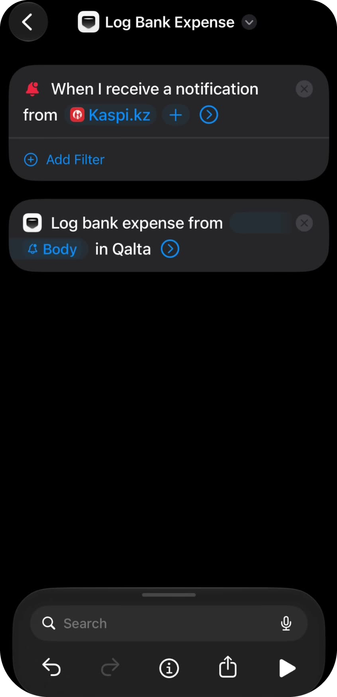
The remaining fields are optional. Tap the chevron to expand them. Options for Category and Account:
Note and Date can stay empty. Turn on Show When Run so a confirmation appears. Tap the back arrow.
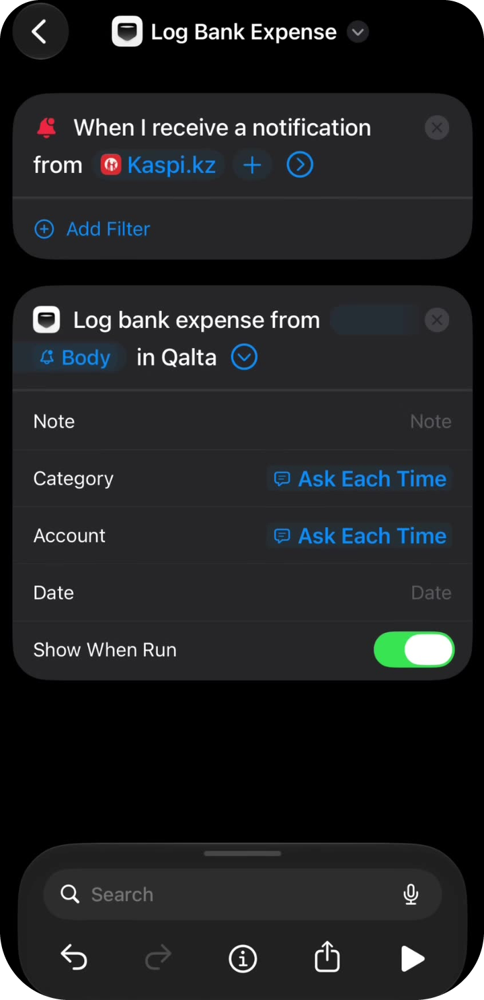
The shortcut appears under All Shortcuts as Log Bank Expense. After the next payment notification from that bank app, Qalta will offer to save the expense.
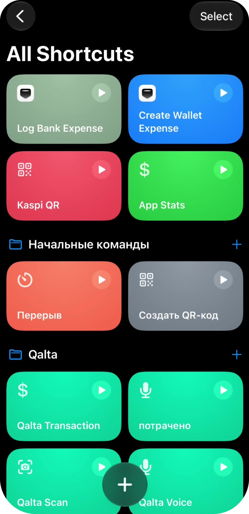
Prefer to follow along on a screen recording?